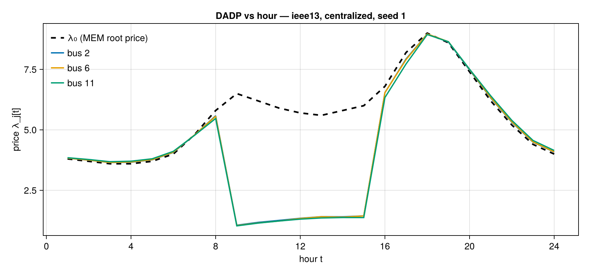
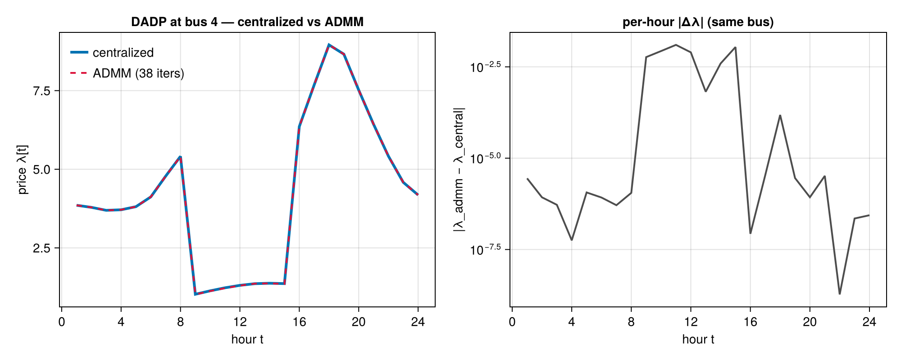
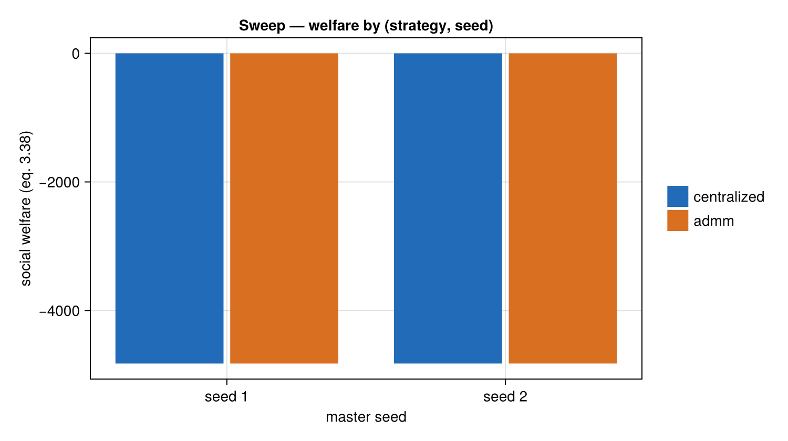

The Experiment Harness — Declarative Scenarios, Runs & Sweeps
This page is the user-facing tour of the Phase-8 experiment harness (EXP-01/EXP-02/ INFRA-04): declare a Scenario as a handful of primitive selectors, run it end-to-end with run_scenario, persist it with provenance via run_and_store, and fan out a Cartesian parameter sweep with run_sweep + collate_summary. Every solve below EXECUTES during the Documenter build over the real src/ code — the displayed welfare/gap/price numbers can never silently drift from the implementation (the toy_dc.jl reproducibility-proof pattern, threat T-01-09).
Why a declarative Scenario?
A Scenario holds ONLY primitive selectors (Symbol/Int/Float64/Bool/ String) — never a constructed Feeder, aggregator vector, or price array. That one design decision buys three guarantees for free:
- Validation at construction — the inner constructor
throwsArgumentErroron any unknownfeeder/strategy/price/populationselector or out-of-rangeT/seed/maxiter, so aScenariocan never silently underdetermine a run (threat T-08-05). There is no "half-configured" state to debug later. - Deterministic materialization — the heavy objects (feeder fixture, MEM price shape, seeded residential aggregator population) are reconstructed from the selectors + the master
seedbybuild_feeder/build_price/build_population, with independent sub-streams derived viasub_seed(never the global RNG). The SAMEScenarioin the SAME process reproduces bit-for-bit (INFRA-04). savename/provenance for free — because every field sits inside DrWatson'sdefault_allowedscalar filter, the on-disk artifact name, hashing, and diffing all fall out with zero customization.
No solver is named anywhere in the harness (INFRA-02) — run_scenario routes through the framework's own solve_welfare/solve_admm, which pick their optimizer via the central solver factory.
using TSODSOA single declarative run
Declare the scenario. Everything not named here takes its validated @kwdef default (price = :mem, population = :default, allow_export = true, the ADMM knobs, ...):
s = Scenario(
name = "docs-demo",
feeder = :ieee13,
strategy = :centralized,
seed = 1,
T = 24,
)Scenario("docs-demo", :ieee13, :centralized, 1, 24, :default, :mem, true, 100.0, 0.0001, 0.001, 200, 2.0, 10.0, 6, 1, true, 0.05, 3, [0.3333333333333333, 0.3333333333333333, 0.3333333333333333], 5)run_scenario materializes the feeder/price/population from the selectors + seed, dispatches on s.strategy (:centralized → solve_welfare + extract_dlmp), and normalizes the outcome into a strategy-independent ScenarioResult. It is PATH-FREE — nothing touches the disk here; persistence is a separate seam below.
res_c = run_scenario(s)ScenarioResult(Scenario("docs-demo", :ieee13, :centralized, 1, 24, :default, :mem, true, 100.0, 0.0001, 0.001, 200, 2.0, 10.0, 6, 1, true, 0.05, 3, [0.3333333333333333, 0.3333333333333333, 0.3333333333333333], 5), -4823.304702297183, [3.8284268570063857 3.7473631999794303 … 4.490742675250245 4.082794262233322; 3.845592290522622 3.772547733066399 … 4.5529742607125465 4.14367311291009; … ; 3.859746422648866 3.7946614788691604 … 4.611213039936619 4.205259880151464; 3.848369661169883 3.775459506244838 … 4.561615434672125 4.147599521445663], 1.7147181282315402e-8, missing, missing, missing, 0.473871567)The social-welfare objective (thesis eq. 3.38) at the solved optimum:
res_c.welfare-4823.304702297183The PF-04 SOC-cone exactness certificate — the max l·v − (P² + Q²) gap across all (branch, hour). A tiny value means the relaxation is EXACT, so the recovered duals below are trustworthy prices, not artifacts of a slack cone:
res_c.exact_maxgap1.7147181282315402e-8The day-ahead dynamic price (DADP) — the dual of the nodal active balance (eq. 3.31) — normalized to a (n_load_nodes, T) matrix with rows in ascending load-bus order, the SAME shape for every strategy so results stay directly comparable:
res_c.dadp10×24 Matrix{Float64}:
3.82843 3.74736 3.64826 3.66222 … 6.32023 5.31227 4.49074 4.08279
3.84559 3.77255 3.67761 3.69526 6.39591 5.38057 4.55297 4.14367
3.8542 3.78885 3.69416 3.71192 6.43093 5.41793 4.58465 4.18092
3.83119 3.75026 3.65129 3.67034 6.33149 5.32466 4.4991 4.08849
3.83257 3.75171 3.6528 3.67356 6.33713 5.32962 4.50119 4.09038
3.83118 3.75371 3.65464 3.66863 … 6.32563 5.32216 4.4991 4.09039
3.84836 3.77545 3.68065 3.6983 6.41329 5.39592 4.56596 4.15551
3.85698 3.79531 3.70068 3.71497 6.44228 5.42832 4.59344 4.19303
3.85975 3.79466 3.70025 3.73212 6.45361 5.43879 4.61121 4.20526
3.84837 3.77546 3.68408 3.70525 6.40723 5.39078 4.56162 4.1476Wall-clock for the full materialize+solve is recorded on the result (res_c.elapsed) for reporting, but it is NON-REPRODUCIBLE and never enters an equality/reproducibility comparison.
Plot 1 — DADP price curves vs hour
The :mem selector materializes the pinned 24-hour wholesale price shape (overnight trough → morning ramp → evening peak); each nodal DADP is that root price PLUS the network uplift (marginal loss / congestion / voltage terms — see the Rung-4 pricing page for the four-way decomposition). A few representative load buses against λ₀:
feeder13 = build_feeder(:ieee13)
load_buses = sort([b.id for b in feeder13.buses if !b.is_root])
λ₀ = build_price(:mem, s.T, nothing)
if Base.find_package("CairoMakie") !== nothing
using CairoMakie
CairoMakie.activate!(type = "png")
fig1 = Figure(size = (900, 420), backgroundcolor = :white)
ax1 = Axis(
fig1[1, 1];
title = "DADP vs hour — ieee13, centralized, seed 1",
xlabel = "hour t",
ylabel = "price λ_j[t]",
xticks = 0:4:24,
)
lines!(
ax1,
1:s.T,
λ₀;
color = :black,
linestyle = :dash,
linewidth = 2.5,
label = "λ₀ (MEM root price)",
)
for row in (1, cld(length(load_buses), 2), length(load_buses))
lines!(
ax1,
1:s.T,
res_c.dadp[row, :];
linewidth = 2,
label = "bus $(load_buses[row])",
)
end
axislegend(ax1; position = :lt, framevisible = false)
fig1
end
Validation is a construction invariant
A bogus selector never reaches a solver — the Scenario constructor itself throws a loud ArgumentError naming the valid set (threat T-08-05; caught here only so the page can display the message):
bad = try
Scenario(name = "docs-bogus", feeder = :ieee14)
catch err
err
end
sprint(showerror, bad)"ArgumentError: Scenario: unknown feeder selector :ieee14; expected one of (:ieee13, :ieee123)"The same guard covers strategy/price/population selectors and the numeric ranges (T ≥ 1, seed ≥ 1, maxiter ≥ 1, positive ADMM knobs, the MPC/stochastic bands).
The :admm strategy — same Scenario schema, decomposed solve
Switching the ONE strategy selector re-runs the IDENTICAL materialized problem through the Rung-5 hand-rolled 2-block dual-ascent loop (solve_admm) instead of the monolithic solve. The result lands in the SAME ScenarioResult schema, now with the ADMM-only fields populated:
s_admm = Scenario(name = "docs-demo", feeder = :ieee13, strategy = :admm, seed = 1, T = 24)
res_a = run_scenario(s_admm)
(iters = res_a.iters, final_r = res_a.final_r, final_s = res_a.final_s)(iters = 38, final_r = 3.7535543373063204e-5, final_s = 0.0741939903397308)The decomposed welfare agrees with the centralized ground truth to a relative gap of
abs(res_a.welfare - res_c.welfare) / abs(res_c.welfare)7.356127436129676e-8and carries its own PF-04 exactness certificate from the final converged DSO-OPT re-solve:
res_a.exact_maxgap1.7284573771088263e-9Plot 2 — centralized vs ADMM DADP at one bus
ScenarioResult deliberately carries only the FINAL residual norms (the full per-iteration trace lives on solve_admm's own result — see the Rung-5 page for the convergence figure), so the cross-strategy check displayed here is the one the normalized schema is built for: the two strategies' DADP overlaid at the load bus with the largest daily price spread, plus the per-hour absolute deviation on a log axis.
if Base.find_package("CairoMakie") !== nothing
spread = vec(maximum(res_c.dadp; dims = 2) .- minimum(res_c.dadp; dims = 2))
row = argmax(spread)
fig2 = Figure(size = (1000, 400), backgroundcolor = :white)
ax2a = Axis(
fig2[1, 1];
title = "DADP at bus $(load_buses[row]) — centralized vs ADMM",
xlabel = "hour t",
ylabel = "price λ[t]",
xticks = 0:4:24,
)
lines!(ax2a, 1:s.T, res_c.dadp[row, :]; linewidth = 3, label = "centralized")
lines!(
ax2a,
1:s.T,
res_a.dadp[row, :];
linewidth = 2,
linestyle = :dash,
color = :crimson,
label = "ADMM ($(res_a.iters) iters)",
)
axislegend(ax2a; position = :lt, framevisible = false)
ax2b = Axis(
fig2[1, 2];
title = "per-hour |Δλ| (same bus)",
xlabel = "hour t",
ylabel = "|λ_admm − λ_central|",
xticks = 0:4:24,
yscale = log10,
)
Δ = abs.(res_a.dadp[row, :] .- res_c.dadp[row, :])
lines!(ax2b, 1:s.T, max.(Δ, 1e-16); linewidth = 2, color = :gray30)
fig2
end
The curves are visually indistinguishable — the ADMM coupling price converged onto the centralized dual, which is exactly the ADMM-04 cross-validation the normalized ScenarioResult schema exists to make routine.
Provenance storage — run_and_store
run_and_store runs the scenario and @tagsaves a self-describing JLD2 under dir (default datadir("sims"), gitignored): EVERY Scenario selector, the scalar results, the DADP matrix, :julia_version, AND — stamped by DrWatson itself — :gitcommit (+ :gitpatch on a dirty tree). The commit + the committed Manifest.toml at that commit fully pin the environment that produced the artifact. dir is an explicit keyword precisely so hermetic runs (tests, this docs build) can point it at a throwaway directory instead of the repo's data/sims:
store_dir = mktempdir()
res_stored = run_and_store(s; dir = store_dir)ScenarioResult(Scenario("docs-demo", :ieee13, :centralized, 1, 24, :default, :mem, true, 100.0, 0.0001, 0.001, 200, 2.0, 10.0, 6, 1, true, 0.05, 3, [0.3333333333333333, 0.3333333333333333, 0.3333333333333333], 5), -4823.304702297183, [3.8284268570063857 3.7473631999794303 … 4.490742675250245 4.082794262233322; 3.845592290522622 3.772547733066399 … 4.5529742607125465 4.14367311291009; … ; 3.859746422648866 3.7946614788691604 … 4.611213039936619 4.205259880151464; 3.848369661169883 3.775459506244838 … 4.561615434672125 4.147599521445663], 1.7147181282315402e-8, missing, missing, missing, 0.121018169)scenario_filename is the single source of truth for the artifact's name — savename(s, "jld2"; digits = 10), hash-suffix-truncated when the fully descriptive stem would exceed the filesystem's 255-byte basename ceiling (the content itself always carries every selector, so nothing is lost):
fname = scenario_filename(s)"T=24_allow_export=true_feeder=ieee13_maxiter=200_mpc_H=6_mpc_forecast_error=0.05_mpc_step=1_mpc_terminal_soc=true_name=docs-demo_population=default_price=mem_seed=1_stoch_H_oos=5_stoch_S=3_strategy=centralized_ε_abs=0.000_hd02dd92efeae6f1.jld2"The artifact is on disk and loads back as a plain string-keyed dict:
loaded = TSODSO.DrWatson.wload(joinpath(store_dir, fname))
sort(collect(keys(loaded)))30-element Vector{String}:
"T"
"allow_export"
"dadp"
"exact_maxgap"
"feeder"
"final_r"
"final_s"
"gitcommit"
"iters"
"julia_version"
⋮
"stoch_S"
"stoch_probabilities"
"strategy"
"welfare"
"ε_abs"
"ε_rel"
"μ"
"ρ"
"τ_ratio"The stamped git-commit provenance anchor (a _dirty-suffixed commit means :gitpatch also holds the uncommitted diff — the run is still fully reconstructible):
loaded["gitcommit"]"227f8cdf0ee32e0836911229eba8a6ecfcf320d4"And the stored numbers round-trip exactly — the loaded artifact IS the in-memory result:
loaded["welfare"] == res_stored.welfaretrueA parameter sweep — run_sweep + collate_summary
run_sweep expands a Dict via DrWatson's dict_list: Vector-valued entries expand the Cartesian product, scalars stay fixed. Here 2 strategies × 2 seeds = 4 scenarios, each run + stored (with the same provenance stamping as above) into a throwaway directory:
params = Dict(
:name => "docs-sweep",
:feeder => :ieee13,
:strategy => [:centralized, :admm],
:seed => [1, 2],
:T => 24,
)
sweep_dir = mktempdir()
sweep_results = run_sweep(params; dir = sweep_dir)
length(sweep_results)4collate_summary reads every per-run JLD2 under the directory back into ONE diff-friendly summary table (fixed column order, deterministic row order, no machine-local path column — so re-collating the same runs is byte-identical, no git churn) and writes it as a CSV; the committed home for real sweeps is results/sweeps/:
csvpath = joinpath(sweep_dir, "docs-sweep.csv")
df = collate_summary(sweep_dir, csvpath)
df[:, [:strategy, :seed, :welfare, :exact_maxgap, :iters, :final_r, :final_s]]| Row | strategy | seed | welfare | exact_maxgap | iters | final_r | final_s |
|---|---|---|---|---|---|---|---|
| Symbol? | Int64? | Float64? | Float64? | Int64? | Float64? | Float64? | |
| 1 | admm | 1 | -4823.31 | 1.72846e-9 | 38 | 3.75355e-5 | 0.074194 |
| 2 | admm | 2 | -4823.0 | 9.0407e-10 | 40 | 8.89728e-5 | 0.0723045 |
| 3 | centralized | 1 | -4823.3 | 1.71472e-8 | missing | missing | missing |
| 4 | centralized | 2 | -4823.0 | 4.28654e-9 | missing | missing | missing |
Plot 3 — sweep welfare by (strategy, seed)
The collated DataFrame feeds analysis/figures directly. Grouped bars of welfare by seed, dodged by strategy — the centralized/ADMM pairs coincide at each seed (the cross-strategy agreement above, now holding across the seed axis), while the two seeds land on genuinely different welfare levels (different seeded populations — the INFRA-04 seed-sensitivity flip side):
if Base.find_package("CairoMakie") !== nothing
seeds = sort(unique(df.seed))
strategies = [:centralized, :admm]
xpos = [findfirst(==(sd), seeds) for sd in df.seed]
grp = [findfirst(==(Symbol(st)), strategies) for st in df.strategy]
cols = [RGBf(0.13, 0.42, 0.72), RGBf(0.85, 0.44, 0.13)]
fig3 = Figure(size = (750, 420), backgroundcolor = :white)
ax3 = Axis(
fig3[1, 1];
title = "Sweep — welfare by (strategy, seed)",
xlabel = "master seed",
ylabel = "social welfare (eq. 3.38)",
xticks = (1:length(seeds), "seed " .* string.(seeds)),
)
barplot!(ax3, xpos, df.welfare; dodge = grp, color = cols[grp])
Legend(
fig3[1, 2],
[PolyElement(color = c) for c in cols],
string.(strategies);
framevisible = false,
)
fig3
end
Where to go from here
The editable entry points mirroring this page live under scripts/:
scripts/run_scenario.jl— edit theScenario(...)call, runjulia --project=. scripts/run_scenario.jlfor a single provenance-stamped run intodata/sims(gitignored).scripts/sweep.jl— edit theparamsDict, run it to launch a sweep and collate the committed CSV summary underresults/sweeps/.
The mpc_* and stoch_* fields a Scenario also carries are NO-OPS for the :centralized/:admm strategies shown here — they are consumed only by the separate run_mpc (Rung-8 rolling horizon) and run_stochastic (Rung-9 uncertainty) entry points, which read the same declarative Scenario schema.
This page was generated using Literate.jl.